|
|||||||||||||||||||||||||||||||||||||||||||||||||||||||||||||||||||||||||||
|
Structure
and Hierarchy of Missing-Value GUERSHON HAREL MERLYN BEHR Northern Illinois University |
|||||||||||||||||||||||||||||||||||||||||||||||||||||||||||||||||||||||||||
Situations that involve a proportional relationship are broadly of two types-- missing value and comparison. A missing-value proportion problem involves four values; three are given, and the goal is to find the fourth under a constraint of equality of the two ratios. A comparison problem results when information is given to form two ratios and a judgment is required about the values of the ratios in terms of whether or not they are equal or which is greater. Performance on both classes of proportion problems is known to vary among individuals. Task-centered, --structural and contextual--and student-centered variables affect student performance (Toumiaire & Pulos, 1985). The effects of context variables on student performance have been studied to some extent; (see e.g., Heller, Post, & Behr, 1985; Karplus, Pulos, & Stage, 1983a, 1983b). On the other hand, research on the effect of structural variables has been virtually nonexistent. Integer ratio is the only structural variable whose effect on students' performance has been studied extensively (Hart, 1981; Noelting, 1980a, 1980b; Rupley, 1981). However, to date, the matter of proportional-reasoning-problem difficulty has been approached only from an empirical perspective and only on the basis of a single variable. No concerted effort has been made .to attempt to interrelate this empirical information, or to hypothesize about the interactive effects of different variables such as order of missing value, relationships between the units of measure, and integer ratio. Moreover, the issue of the interaction among problem presentation, problem representation, and problem difficulty, has been completely ignored in proportional reasoning research. The main goal that initiated this research was to hypothesize a hierarchical matrix reflecting the difficulty of missing-value proportion (MVP) problems. The analysis carried out to achieve this goal resulted in a problem-solving model which incorporates the interrelation among problem presentation, problem representation, operators, and strategies. In the first section of this paper - Problem Presentation - three structural variables are considered, of which some subvariables have not been treated in the proportional reasoning literature: (a) order (location) of the unknown; (b) unit of measure, with the subvariables of measure space, dimension, and partitionability; and (c) divisibility, with the subvariables of direction of divisibility (e.g., 2 per 6 vs. 6 per 2) and common divisor. An analysis of these variables and the interrelation among them provide a structural analysis of 512 MVP problem structures. In the second section - Representation, Operators, and Strategies - problem representations, operators, and solution strategies are considered. The analysis of problem representations and operators yielded (a) three classes of representations: comprehension (used to understand the problem), intermediate (used to explore the relationship among problem components), and procedural(used to apply a. solution strategy); and (b) three classes of operators; one class forms a mathematical group of eight transformations which solvers use to transform a problem structure to another problem structure without changing the problem quantities; the second class consists of operators which change the problem quantities but keep the problem structure unchanged; and the third class consists of operators which instantiate on procedural representations and give a set of 15 solutions' strategies. In the third section - Preferences for Solutions and Problem Difficulty - analyses of preferences for forming procedural representations and for instantiating problem operators are proposed. Following this, in the subsection Hierarchy of Problem Difficulty, we propose a difficulty hierarchy of MVP problems as a function of these preferences and of the kind and number of transformations available to the problem solver. Related Research on Representations It is well known that the conceptual process of problem solving is described by: (a) the problem presentation which includes the initial state, the goal, and the constraints; (b) problem representations, which are mental or external structures that reflect the information available to the solver; (c) a set of operators to be used by the solver in manipulating these structures toward a goal state; (d) knowledge of the problem domain: the knowledge brought to the problem by the solver; and (e) instantiations of the operators as strategies or processes which the solver applies in efforts to reach the goal state for a particular problem. Researchers investigating problem solving have found that the problem presentation and the knowledge of the problem domain determine the problem representation formed by a solver (Chi, Feltovich, & Glaser, 1981; Greeno, 1977). This, in turn, guides retrieval of solution procedures (Chi, Glaser, & Rees, 1982). Problem difficulty has been found to be a function of the mental and external representations the problem solver forms from the problem presentation. Larkin (1981), in studies comparing expert and novice performance on physics textbook problems, found that experts’ problem representations include an intermediate phase in which the first phase, surface features are transformed. This transformation makes the final phase of an algebraic representation much easier to formulate and, hence, makes the problem much easier to solve. Novices, on the other hand, find it difficult to form this intermediate representation and attempt to transform this surface-feature representation directly to the algebraic representations. Davis (1984) has observed that problem solvers find their initial problem representation difficult to relinquish even when it provides no basis for advancing to a solution. Other authors (Behr, Lesh, & Post, 1986; Greeno, 1983) observed that good problem solvers use numerous problem representations during the course of a problem solution. PROBLEM PRESENTATION A representation of a quantity consists of two components; a number and a unit of measure. The structure of MVP (Missing Value Proportion) problem presentations will be considered with respect to three major structural variables related to the problem quantities and their components. The first variable related to a syntactic relationship between the problem quantities. This is the order of the missing value with respect to the other three quantities. The other two variables relate to relationships between corresponding components of the problem quantities. These are unit of measure, with subvariables of measure space, dimension, and partitionability, terms to be defined below; and divisibility relations (e.g., absence or presence of an integer ratio) with an added subvariable of the "direction" of the divisibility relationship, and absence or presence of common divisor. A scheme for the variables and subvariables to be considered in this analysis is shown in Figure 1.
|
|||||||||||||||||||||||||||||||||||||||||||||||||||||||||||||||||||||||||||
|
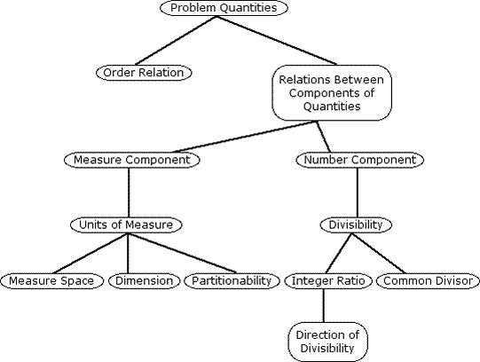 FIG. 1. A scheme for the variable and subvariables considered in the analysis.
|
|||||||||||||||||||||||||||||||||||||||||||||||||||||||||||||||||||||||||||
|
Order Relation A MVP problem is presented with three given quantities and one unknown. These four quantities are syntactically linked, and paired and ordered, and semantically linked by statements of the problem presentation, either implicitly or explicitly, by a word such as "per," "and," "at," or "for." We will refer to problem statement which expresses such a link as a per statement, the one which links two known quantities, the closed per statement, and the one which include the unknown quantity, the open per statement. Within a closed per statement, "a per b," a is referred to as the compared quantity and b as the referent quantity When a is the missing value, it will be called the unknown compared quantity: and b the open-sentence referent quantity. Similarly, when b is the missing value, it will be called the unknown referent quantity and a the open-sentence compared quantity. Order refers to the location of the unknown quantity with respect to the three given known quantities. It is determined by its order within the open per statement in which it appears and by the order of the two per statements in the problem or problem representation. This identifies four categories based on order:
Thus, any MVP problem belongs to one of four categories defined by the combinations BL, TL, TR, and BR. These categories are illustrated graphically by the schemata in Figure 2.
|
|||||||||||||||||||||||||||||||||||||||||||||||||||||||||||||||||||||||||||
FIG. 2. Schemata for problem structure categories determined by the order variable.
|
|||||||||||||||||||||||||||||||||||||||||||||||||||||||||||||||||||||||||||
|
Cognitive Considerations. We hypothesize that the location of the missing value and the role of the quantities as compared or referent have an effect on the solution process of the problem because of several considerations. First, research on children's understanding of the equal symbol clearly indicates a preference for completing a computation in a left-to-right order (Behr, Erlwanger, & Nichols, 1976; Kieran, 1981). Second, research in the area of children's skills in solving addition problems has found the position of the missing number to affect difficulty; problems such as 4 + 3 = x, 4 + x = 7, x + 4 = 7, and x = 4 + 3, are ordered from the least to the most difficult (Riley, Greeno & Heller, 1983). Third, to transfer the relationship between the quantities within the closed per statement to an operation on the open-sentence known-quantity is likely easier if the closed per statement appears first. Fourth, we consider the proportion problem schema to include four slots to be filled by the quantities of the closed and open per statements, where two slots are for the compared quantities and the other two for the referent quantities. To solve a proportion problem, the quantities of the open per statement must be distinguished from and coordinated with those of the closed per statement. This coordination can be achieved by assigning different roles to the quantities: compared and referent. Thus, it is likely that the coordination of the quantities in the representation,
necessitates less processing than in the representation,
The compared and the referent quantities have an additional role in the solution procedure. Solving a proportion problem necessarily involves solving multiplicative (multiplication or division) problems. Consequently, when a proportion problem schema is instantiated, its computational procedure activates multiplicative problem schemata. It is known that the solvers favored conceptualization of a multiplicative problem structure is based on the roles, as compared or referent, assigned to the quantities involved in the problem statement. For example, Bell, Greer, and Grimison (1987), found that among the two problem structures: "a hours at b miles," and "c miles at d hours," the students favored the latter one. The role of the order relation in solving MVP problems will elaborated upon later. COMPONENTS OF QUANTITIES In addition to order, MVP problem structure will be considered with respect unit of measure and divisibility variables. The unit of measure variable rail issues of a semantic nature about the measure space from which the unit derived (whether or not the quantity can be partitioned is an example), and whether the same or different measure spaces are used. The divisibility variable raises the issue of whether an integer ratio is present between the number components, or, if not, whether a common divisor is present. We elaborate on the unit of measure and the divisibility variables in this section and suggest some cognitive considerations that arise. Unit of Measure Measure Space. MVP problems vary according to whether one or two measure spaces are involved; and for those with two measure spaces whether the quantities within, or between, per statements are from the same or different spaces. In case the quantities arise from the same space, the MVP problems Vi according to whether one or two dimensions are involved. Based on the measure space variable, we identify three categories of problems, which are illustrated in Figure 3:
|
|||||||||||||||||||||||||||||||||||||||||||||||||||||||||||||||||||||||||||
|
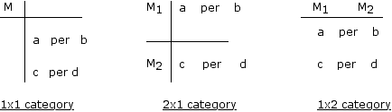 FIG. 3. Schemata for the problem structure categories determined by the measure variable. |
|||||||||||||||||||||||||||||||||||||||||||||||||||||||||||||||||||||||||||
|
Dimension. The two expressions, 443 hours" and 44180 minutes," represent equal quantities from the same' measure space-time. However, each expression involves a different dimension for the time measure space. The measure space subvariable of dimension suggests an additional categorization as follows: Within the I x I Category, we distinguish four subcategories:
Within the 2 x 1 Category, we distinguish two subcategories:
Within the 1 x 2 Category, we distinguish two subcategories:
The analysis of the dimension subvariable in the 2 x 1 category is restricted to MVP problems in which the open-sentence known-quantity and the unknown quantity have the same dimension. Partitionability. Evidence exists to suggest that people attribute quantitative meaning to numbers (e.g., Schwartz, 1979), and that these meanings have impact on the judgments they make in comparing and computing with numbers. One semantic aspect of the measure unit which has not received attention in the literature is the partitionability of the quantity represented by the unit of measure. This refers to whether the quantities represented by the unit can be physically, or conceptually, divided into (equal) parts. The aspect of partitionability might have an impact on the way per statements are conceptualized, and consequently may influence the solution process for MVP problems. For example, the fact that "child" is not a partitionable unit, but "candy" and "dollar" are, will differentially affect the conceptualization of the following statements:
Since "candies" and "dollars" are both partitionable units of measure, the second statement can be transformed into two meaningful unit-rate statements: "1 candy per 3/2 dollars," or "'2/3 candy per 1 dollar." The first statement, on the other hand, can be transformed into only one meaningful unit-rate statement, "'2/3 candy per child;" "1 candy per 3/2 children" is meaningless for problem solvers who. are not familiar with the abstract notion of unit-rate because "halves" of children does not have a real world base. Our analysis of partition ability shows that this is potentially influential in solving multiplication, division, and proportion problems. Presentation of this analysis goes beyond the scope of the present paper, We will report it, separately, at another time. Cognitive Considerations. The differentiation of quantity into a number and a measure component has important cognitive implications. Consider the simple MVP problem (or multiplication problem, Vergnaud, 1983), "If 1 candy costs 2 cents, how much do 5 candies cost?" A likely thinking sequence to solve this problem is as follows: "One candy for two cents, so five candies for five times two, or ten cents," This thinking demonstrates implicit recognition of the number-measure differentiation of a quantity. In the multiplication, five times two to get ten, the number component 5 was detached from the unit of measure in the quantity representation of 5 candies, The solver seems to recognize that the multiplication of the quantities 5 candies and 2 cents to give 10 candy-cents has no meaning except in a contrived sense. (The sense in which 10 candy-cents is contrived is that there is not a social context in. which 10 candy-cents has meaning analogous to the way 10 man-hours, for example, does.) If 5 candies and 2 cents are viewed as quantities, it is not clear why 5 candies x 2 cents yields cents and not candies (Vergnaud, 1983). The cognitive complexity involved in procedural solution strategies is further increased if the numbers in the problem above are changed: "If 3 candies cost 5 cents, how much do 6 candies cost?" The change in number of candies from 1 to 3 and the introduction of the integer ration between 3 candies and 6 candies makes the following solution strategy the more probable one: "Two times three candies gives six candies, so two times five cents gives ten cents." The verbiage in the solution is likely to be reduced to: "Two times three is six, so two times five, ten cents." Further analysis of how the existence of an integer ratio affects problem structure, and therefore problem solution strategies and problem difficulty, is discussed in the following section. Divisibility Relations Cognitive Considerations. The direction of divisibility and the common visor relationships have not been investigated in research on proportional reasoning. Later in this paper, the effect of the latter variable on the formation of problem structure in a problem representation will be discussed. The effect of former variable on problem difficulty is likely to be extensive. This is because valid solution strategies for MVP problems require finding a multiplicative (Multiplication or division) relationship between the two quantities within a closed statement and extending that relationship to the open per statement quantities to find the missing value. Research in the area of children's understanding of multiplication and division (Fischbein, Deri, Nello, & Marino, 1985; E Fischbein, & Greer, 1984) has indicated that children's performance on multiplication and division problems is affected by whether or not an integer ratio exists (i.e., the quotient is an integer) and according to the direction of divisibility (i.e., whether or not the dividend is greater than the divisor). PROBLEM STRUCTURE At this point we bring together the consideration of the six variables—order, measure space, dimension, integer ratio, direction of the divisibility relation when an integer ratio exists, and common divisor--and define problem structure as a function, S, of these variables. S(O, M(m), R(d,,c)) is the MVP problem structure where O, M, m, R, d, and c are as follows:
For illustration, if we initially define problem structure, S, as a function of two variables O and M, S(O, M), this identifies the 12 problem structures illustrated by the schemata in Figure 5.
|
|||||||||||||||||||||||||||||||||||||||||||||||||||||||||||||||||||||||||||
|
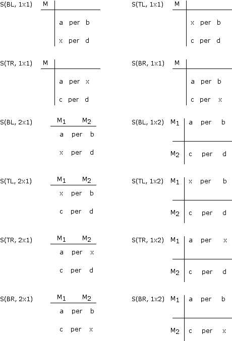 FIG. 5. Schemata for problem structure categories determined by combining the order and measure apace variables.
|
|||||||||||||||||||||||||||||||||||||||||||||||||||||||||||||||||||||||||||
|
If we consider the four categories of O, the eight subcategories m of M, and the sixteen subcategories d and c of R, then S(O, M(m), R(d,c)) identifies a total of 4 x 8 x 16, or 512 MVP problem structures. Of these 512, those with dimension 1 (1 x 1a,b,c,d) form a class of problems which Behr et al., (1987) call part-whole proportion problems; 1 x 1c includes measure conversion problem 1 x 1a includes all percentage problems. Problems in categories 2 x 1 and 1 x 2 are referred to as rate problems (Behr, Lesh, & Post, 1986; Toumiaire & Pulos 1985); according to our analysis, there are 4 x 4 x 16, or 256, rate problems. REPRESENTATIONS, OPERATORS, AND STRATEGIES To solve a problem, a solver must have knowledge about: (a) the object components, and quantities of the problem; (b) the initial state and the goal state of the problem, and (c) a set of operators associated with the problem representation for transforming the initial state along a path of problem states to the goals state; and (d) the restrictions, or constraints, under which the operator can be applied (Simon & Hayes, 1979). In this and in the following section we suggest problem-solving model for MVP problems which describes an understanding process and a solution process in which the above knowledge is incorporated. Our model is consistent with Simon and Hayes' (1979) model, and is based on problem representations, each of which we assume to include a problem structure isomorphic to one of the problem structures we have described earlier. The terms problem representation and problem operator, which will be used to describe our model, are as defined by Newell and Simon (1972). A problem operator is an information process which produces new states of knowledge from existing states of knowledge. For our purposes we consider three classes of operators: (a) those which operate on a problem structure to produce another problem structure and keep the values of the problem quantities unchanged. We refer to these as problem structure operators, or transformations; (b) those which change the values of the problem quantities but keep the structure unchanged We will deal with one case in this class which is found to be commonly used by children, the unit-rate operator; and (c) those which operate on problem components within a problem structure. The latter operators are referred to as procedural operators, since an instantiation of such an operator for a particular MVP problem is a solution procedure. We will describe these operators in detail in the next sections. A solver's problem representation defines a problem space which permits the solver to consider different problem structures in ways that help to determine what to do and to select problem operators to change one problem situation to another. We assume that the problem solver employs different problem structures for understanding the problem, for exploring the problem components to select procedural operators, and for instantiating the procedural operators to find the missing value. We will refer to problem representations that include these structures, respectively, as comprehension representations. intermediate representations. and procedural representations. Our conceptualization of the solution process is, then, that a solver uses one or more problem representations to understand the problem, other representations to explore relationships between problem components in order to determine the appropriate procedural operators and, finally, having selected a procedural representation, a solution procedure will be applied. If the procedure fails, the procedural representation may be transformed back to a representation for comprehension, or again, through a series of intermediate representations to explore the relationship among problem components. As an example, consider a MVP problem whose presentation is of the form:
In terms of problem understanding, which first of all requires language processing (Simon, 1979), a first problem representation might include a problem structure very close to the problem presentation structure, such as:
On the other hand, if the solver rereads the problem for the purpose of attending to the problem question, this may suggest a transformation of the problem representation to:
Intermediate representations which a solver forms would likely depend on the salience of certain variables, both structural and contextual, as well as operators that are in the solver's mind or suggested by the problem structure or context. For example, a solver may have in mind that proportion problems call for a division operation: If a is an integer and less than c, this number pair would fit the solver's intuitive partitive division schema (Fischbein et al., 1985). This might suggest a problem representation such as:
If the solver had a multiplication operation in mind, and an integer ratio existed between a and b, with a less than b, the probable representation would be:
If, for example, this last representation is the one which the solver determined to apply a solution procedure, then it would be a procedural representation-- an issue with which we will deal in the next section. The impact of structural and contextual variables on the formation of proportion problem representations seems to be extensive. In our pilot work, we found that even the presence of common divisor relationship, which does not seem to influence the conceptual interpretation or the solution procedure of the problem affects the .problem representation structure. For example a problem, such as,
was transformed into:
An explanation for this behavior is that the child, when planning the solution process, looks for numbers that "look alike" (i.e., have some property in common), hoping that this will help in computations. PROCEDURAL REPRESENTATION STRUCTURE In this section we are concerned with procedural representation structures, which will be used later as a basis for analyzing solution strategies and problem difficulty. These structures will be determined according to the following characterizations: First, as was discussed earlier, a procedural representation is an ordered set of two per statements. Second, by definition, a solution procedure is applied to a procedural representation; it starts with finding a relationship between the closed per statement quantities and continues by extending this relationship to the open per statement. Consequently, a procedural representation will be assumed to be in a form in which the closed per statement precedes the open per statement. Third, once the procedural representation is formed, the solver's attention is given to within per statement pairs of quantities; a shift in attention to between per statement pairs constitutes, in our view, formation of a new procedural representation. These characterizations impose restrictions on the structural variables which can be considered in the procedural representation These restrictions, eliminate any consideration of relationships between quantities from different per statements but concentrate on those which have impact on the solution procedures, such as absence or presence of integer ratio. The reader might find it helpful to compare the following structural variables considered in the procedural representation to those we considered in the problem presentation (see first paragraph, Problem Structure Section).
The common divisor variable is not considered in the procedural representation structure. As was noted earlier, this variable has an impact on the formation of the procedural representation structure, but its influence on the computational procedure does not seem to be extensive. The procedural representation structures, denoted by P(O, M(m), R(d)), consists of 18 sets of problems structures: The two values Land R (of the variable O) appear with the three values ia, ib, and ii (of the variable M and the subvariable m); each of the six structures resulting from these combinations appears with the three values YS, YG, and N (of the variable R and the subvariable d). This identifies a total of 2 x 3 x 3, or 18 sets of procedural representation structures. Examples of these structures are shown in Figure 6.
|
|||||||||||||||||||||||||||||||||||||||||||||||||||||||||||||||||||||||||||
FIG. 6. Example problems to illustrate each of the eighteen procedural representations.
|
|||||||||||||||||||||||||||||||||||||||||||||||||||||||||||||||||||||||||||
|
OPERATORS
Transformations
|
|||||||||||||||||||||||||||||||||||||||||||||||||||||||||||||||||||||||||||
FIG. 7. The eight transformations on the MVP problem structures.
|
|||||||||||||||||||||||||||||||||||||||||||||||||||||||||||||||||||||||||||
|
T1 The identity transformation leaves the problem structure unchanged; T2 Reflection of columns (or rate reciprocation transformation) changes the location of the between per statement ordered pairs (a,c) and (b,d) with respect to each other (left vs. right); T3 Reflection of rows (or per statements reciprocation transformation) changes the location of the within ordered pairs (a,b) and (c,d) with respect to each other (top vs. bottom); T4 Reflection with respect to the diagonal including the unknown (or measure space reciprocation transformation) changes the location of the quantities on the other diagonal with respect to each other; T5 Reflection with respect to the diagonal which does not include the unknown (or measure space reciprocation transformation) changes the location of the quantities on the other diagonal with respect to each other; T6 Counterclockwise Rotation which changes the location of each quantity through an angle of 90°; T7 Counterclockwise Rotation which changes the location of each quantity through an angle of 180°; T8 Counterclockwise Rotation which changes the location of each quantity through an angle of 270°. We found evidence in our pilot work that at least some of these transformations are used, but do not know if all are used. However, it is likely that T1 – T5 are the most accessible transformations; the three rotations T6 – T8 result from compositions of transformations T1 – T5. For example, T3 ° T2 = T7. Except the identity transformation T1 which leaves the problem structure unchanged, each transformation changes some relationship between quantities in the problem presentation or representation, but leaves the proportional relation among the quantities invariant. For example, if an integer ratio exists in the closed per statement, T2 (rate reciprocation) will change the direction of divisibility, T3 (per statement reciprocation) will change the problem structure by interchanging the open and closed per statements (bottom vs. top) but keeping the structure unchanged with respect to the location of the unknown (left vs. right). If two measure spaces are involved, T4 (measure space reciprocation) will change the problem structure with respect to the measure space (1 x 2 vs. 2 x 1). We hypothesize, then, the existence of cognitive processes (transformations) which change or transform the problem structure based on at least one salient variable such as the location of the unknown, location of the closed per statements with respect to the open per statement (top vs. bottom), and the measure space (1 x 2 vs. 2 x 1). Unit-rate Operator
may be changed under the unit-rate operator to
A composition of this unit-rate operator and a structure transformation is possible. For example, the latter problem structure may not be the child's preferred procedural representation; it is likely that a child would prefer to find the multiplicative relationship between whole numbers as compared to one between a fraction and a whole number. To allow for this, the child may apply a structure transformation, T4, for example, following application of the unit-rate operator to form the following procedural representation:
Children who use the unit-rate operator essentially transform the MVP problem to a more elementary multiplication or division problem, that is, a problem in which one of the three given values is 1. As such, it is important to our analysis to understand that the unit-rate operator transforms a problem representation into another representation. It is not a solution procedure, or strategy. Instead, the representation which results from application of a unit-rate operator is one on which procedural operators can be instantiated directly in one of the ways discussed in the next section of this paper. For example, consider the problem:
One of several possible applications of the unit-rate operator could result in the following multiplication problem,
One method of solving this is simply to multiply 5 times 4/3 and interpret the product to represent cents (Vergnaud, 1983). This does not explain how the student cognizes the role of the 1 in the problem. We hypothesize, however, that the multiplication of 5 times 4/3 suggests explicit recognition of 1 and at least implicit attention to determining the relationship between 1 and 4/3 and expressing it with the equation 1 x 4/3 = 4/3. One possible solution strategy for solving this problem is that the 4/3 in the operator position in this equation is explicitly applied as an operator to the known value in the open per statement to find the missing value with the multiplication 5 x 4/3. Formation of the sentence 1 x 4/3 = 4/3 and the use of the 4/3 in 1 x 4/3 as the operator in 5 x 4/3 illustrates one of several solution strategies we will discuss in the next section. A different application of the unit-rate operator would result in the following division problem.
An analysis similar to that above would involve division equations such as 3/4 ÷ 3/4 = 1 followed by, 5 ÷ 3/4 to find the problem unknown, illustrates another solution strategy discussed in the next section. PROCEDURAL OPERATORS AND STRATEGIES In the previous section we described two kinds of knowledge structures involved in solving a MVP problem: (a) problem representations-comprehension, intermediate and procedural, and (b) operators, which act on a problem representation or act on objects within a procedural representation. A third kind of knowledge is necessary. This is the knowledge to instantiate and carry out the operators for a specific problem. It involves a sequence of finding relationships, applying mathematical operations and checking constraints to define the way in which the selected operator(s) is (are) carried out. This knowledge is referred to as procedural knowledge (Riley et al., 1983). Consistent application of this knowledge results in an identifiable strategy. A strategy is valid if it observes appropriate constraints and invalid if any problem constraint is violated. For MVP problems we have identified two operators which are associated with the procedural representation of problem solvers. These involve "relating the closed per statement quantities" (the RCQ operator) and "relating the open per statement quantities" (the ROQ operator). Children use different methods to carry out (instantiate these operators; some result in invalid (e.g., additive) strategies, some in valid strategies. Among the valid strategies, we consider several instances of multiplicative strategy-a strategy in which the quantities within the per statements are related by multiplication or by division. A multiplicative strategy starts with carrying out the RCQ operator by relating the quantities a and b in the closed per statement, in terms of a third, initially unknown, quantity u. This relationship is translated into a multiplication equation a X u = b, or b X u = a, or into a division equation a ÷ u. = b, b ÷ u = a, a ÷ b = u, or b ÷ a = u. Then, the computed value of u in this equation and a mathematical operation are extracted to construct a new equation to be applied to carry out the ROQ operator. If the computed value for the unknown u of the equation is v, then the missing value x and the open-sentence known-quantity c are related in a multiplication equation c X v = x, or x X v = c, or in a division equation x ÷ v = c, c ÷ v = x, x ÷ c = v, or c ÷ x = v. In the next section we will analyze the child's preference hierarchy for choosing a pair of equations to instantiate the RCQ (Relating the Closed per statement Quantities) and the ROQ (Relating the Open per statement Quantities) operators. A multiplicative strategy will be called a preserving strategy if the two operators, RCQ and ROQ, are both carried out by the same kind of equation, multiplication or division; it will be called a non-preserving strategy if one operator is carried out by a multiplication equation and the other by a division equation. A multiplicative strategy will be called, respectively, a multiplication or a division strategy, according to the kind of equation -- multiplication or division -- used to carry out the RCQ operator. Consequently, we identify four multiplicative strategies: Preserving Multiplication Strategy (PMS); Preserving Division Strategy (PDS); Non-preserving Multiplication Strategy (NMS); and Non-preserving Division Strategy (NDS). Further distinctions among the kinds of equations will lead to a refinement of each of these strategies into substrategies. We distinguish between an equation whose unknown is found by direct computation, that is, a computation in which the unknown appears as a result, that is, as the product or quotient of two known quantities (e.g., b ÷ a = u, c X v = x), and an equation whose unknown is found by indirect computation, that is, an equation in which the unknown quantity appears as "missing factor," "missing dividend," or "missing divisor" (e.g., a X u = b, x ÷ v = c, c ÷ x = v). These equations will be referred to, respectively, as D (direct) and I (indirect) equations. Among the I division equations, applied to carry out the ROQ operator, we distinguish whether the computed value v is a result (e.g., c ÷ x = v, x ÷ c = v), or a mathematical operator divided by v (e.g., x ÷ v = c). The former kind of equation will be denoted by I*. We next indicate which of the equation types, D and I, can be used to carry out the RCQ (Relating the Closed per statement Quantities) and ROQ (Relating the Open per statement Quantities) operators. This will lead to refinements of PMS (Preserving Multiplication Strategy), PDS (Preserving Division Strategy), NMS (Non-preserving Multiplication Strategy), and NDS (Non-preserving Division Strategy). Under the proportionality constraint, the operators RCQ and ROQ can be carried out by one pair of equations DD, II, DI, ID, DI*, and II* (the pairs I*D, I*I, or I*I* are not included, since I* does not pertain to the RCQ operator), However, not all these pairs can be combined with each of, the strategies defined. The possible combinations are as follows: (a) a multiplication equation to carry out an RCQ operator must be of the I kind; to carry out an ROC; operator, it can be either D or I, but not I*, since I* pertains only to divisor equations: Therefore, ID and II can be combined with PMS; (b) a divisor equation to carry out an RCQ operator can be either D or I; to carry out an ROC operator, it can be D, I or I*. Thus, DD, DI, DI*, ID, II, and II* can be combined with PDS; (c) combining restrictions on the type of multiplication equation to carry out RCQ (a above) with the allowable division equation to carry out ROQ (b above) determines that ID, II, and II* can be combined with NMS (d) combining the possible types D and I for a division equation to carry out RCC with the possible types D and I for a multiplication equation to carry out ROC would suggest that DI, DO, II, and ID could be combined with NDS. Consequently, the four strategies, PMS, PDS, NMS, NDS, defined earlier, can be differentiated, respectively, as follows: PMS-ID, PMS-II; PDS-DO, PDS-DI, POS-DI*, PDS-ID, PDS-II, PDS-II*; NMS-ID, NMS-II, NMS-II* NDS-DD, NDS-DI, NDS-ID, NDS-II. Altogether, a total of 15 multiplicative strategies are identified. Cognitive Considerations. This analysis suggests two main pedagogical implications. First, even after the procedural representation is formed, and the RCQ and ROQ operators are identified, the final goal state of the problem solution is still quite distant. Applying a multiplicative strategy to solve a MVP problem involves more than a routine solving of simple multiplication and division equations; it demands a complicated series of coherent cognitive activities: formulating an equation solving the equation, using the solution to formulate a second equation, solving the second equation to determine the missing value of the problem, and reflecting on this as the replacement for the missing value. Second, there is a variety of equations, different in structure, which might be applied by the solver to carry out the RCQ and ROQ operators. The solver's choice of a certain multiplicative strategy is influenced by the knowledge for solving multiplication and division problems that he or she has. We will discuss these observations in a later section and present a hypothesized preference hierarchy for equations to instantiate the RCQ and ROQ operators. Applying a multiplicative strategy to solve a MVP problem seems even more complex if we consider the viewpoint that people tend to interpret facts and ideas in terms that are behaviorally and enactively meaningful (Fischbein et al., 1985) According to this viewpoint, the solver considers not only the numerical components of the quantities involved, but also the measure units. Consequently, applying a multiplicative strategy is not just formulating and solving multiplication and division equations which involve unit-free, or pure, numbers. It is matter of comprehending, understanding, and solving multiplication and division application-type word problems which involve extensive and intensive quantities. Therefore. earlier analyses of multiplication and division problems (e.g.. Freudenthal. 1983; Kaput. 1985; Schwartz. 1979; Usiskin & Bell, 1983) and findings about childrens' ability to solve these problems (e.g., Bell et al., 1984; Fischbein et al., 1985; Greer & Mangan, 1984) are all pertinent to the multiplicative strategies we have identified. For example, according to the analysis by Schwanz (1979), division between extensive quantities leads to an intensive quantity. Thus, if the closed per statement quantities are extensive, the computed value which results from instantiating the RCQ operator must be intensive; if the solver wants to use PMS or NMS strategies but lacks a conceptual understanding of this particular intensive quantity, he or she may be unable to formulate a second word problem, or find the necessary equation needed to carry out the ROQ operator. Or, from another direction, Kaput (1985) and Bell, et al. (1984) found that the variety of student-formulated problems is very limited; student formulated division problems consist mainly of partitive division which conform to Fischbein's intuitive models. These students are limited in formulating even the first equation to carry out the RCQ operator, if the numerical components of the closed per statement quantities do not meet the conditions of the intuitive partitive division model. PREFERENCES FOR SOLUTIONS AND PROBLEM DIFFICULTY Problem difficulty has been found to depend on the representation of the problem and on the operators associated with that representation (Larkin, 1983). The objective in this section is to describe this dependence for the domain of MVP problems. For this, we first present an analysis which leads to a hypothesis about children's preference for instantiating the RCQ and the ROQ operators. Next, we will suggest a difficulty hierarchy of the procedural representations based on these hypothesized preferences. Finally, we will hypothesize a hierarchy for MVP problems based on this hierarchy and on the structure transformations available to the individual problem solver. PREFERENCE FOR SOLUTION STRATEGIES Preference For
Instantiating the RCQ Operator
For a non-integer ratio situation, a relative preference for multiplying a larger quantity to get a smaller quantity would need to be incorporated. Preferences for Instantiating the ROQ Operator The analysis of the solution strategies we have presented earlier (see Procedural Operators and Strategies section) suggests that instantiations of the ROQ operator in the context of the already instantiated RCQ operator involves judgment on four relational variables among the RCQ and ROQ operators: (a) preserving direction, that is, maintaining the same direction for computation as used in RCC operator, or changing it; (b) preserving operation, that is, maintaining the same operation (multiplication or division) used in RCQ operator, or changing it; (c) known-to-unknown, that is, using the value computed in the RCQ operator to find the value of the unknown from an equation which relates the quantities of the open per statement. In this equation the value, v, computed in RCQ can be either a mathematical operator on the known quantity (e.g., d ÷ v=x, the relation is from known to unknown, KU), a mathematical operator on the unknown quantity (e.g., x ÷ v =d, the relation is from unknown to known, UK), or the answer to an operation on the known and unknown (e.g., x ÷ d =v, O); (d) equation-structure equivalence, that is, maintaining complete (C), partial (P) or no (NO) equation structure equivalence between the RCQ equation and the ROQ equation, terms to be defined below. These equation-structure
equivalence terms relate to the coordination among operations on the quantities
and the roles of these quantities as compared, referent, computed value,
and unknown, which is done in the transition from the RCQ to the ROQ operator
in order to maintain the proportionality constraint. Order of missing
value is the structural variable to which these equation-structure equivalence
terms are pertinent. With respect to this variable, there are two procedural
representation structures: those with the unknown to the left (Figure
8a) and those with the unknown to the right (Figure
8b). All possible equation pairs by which RCQ and ROQ operators can
be instantiated for these two procedural representation structures are
given in the second and third columns of Tables 1
and 2. To define the equation-structure equivalence
terms, let these equation pairs be represented, respectively, by 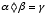 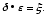 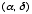 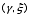 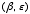 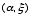 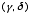 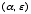 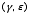 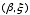 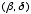 We note that the relational variables between the RCQ and ROQ operators, preserving of direction, preserving of operation, known-to-unknown, and equation-structure equivalence, are interrelated but not completely mutually dependent on each other. For example, while preserving complete structural equivalence leads to the direction of computation and the type of operation being maintained, the converse of this statement is not always true (see, for example, Rows 9 & 12 in Tables 1 & 2); partial structural equivalence leads to a nonpreserving of direction and operation, but in some cases (see, for example, Rows 3 & 6 in Tables 1 & 2) the converse of this statement is not true. We turn now to hypothesize a preference hierarchy for instantiating the ROQ operator, with the RCQ operator having been instantiated, within each of these related variables (preserving direction, preserving operation, known-to-unknown, and structural equivalence) and among combinations of them.
|
|||||||||||||||||||||||||||||||||||||||||||||||||||||||||||||||||||||||||||
FIG. 8. Schemata for the two procedural representations which reflect the order variable. |
|||||||||||||||||||||||||||||||||||||||||||||||||||||||||||||||||||||||||||
|
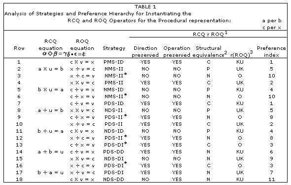 1 RCQ r ROQ denotes the relationship between RCQ and ROQ 2 C, P, N denote, respectively, Complete, Partial, or No equation-structure equivalence. 3 r(ROQ) denotes the relationship between the known and unknown quantities in the open per statement according to how the equation for the ROQ operator relates them from known to unknown (KU), unknown to known (UK), or as operator and operand (O). |
|||||||||||||||||||||||||||||||||||||||||||||||||||||||||||||||||||||||||||
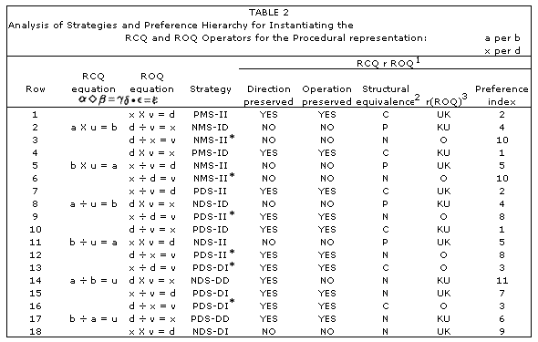 1 RCQ r ROQ denotes the relationship between RCQ and ROQ 2 C, P, N denote, respectively, Complete, Partial, or No equation-structure equivalence. 3 r(ROQ) denotes the relationship between the known and unknown quantities in the open per statement according to how the equation for the ROQ operator relates them from known to unknown (KU), unknown to known (UK), or as operator and operand (O). |
|||||||||||||||||||||||||||||||||||||||||||||||||||||||||||||||||||||||||||
|
Judgments Within Variables. Concerning the child's preferences in making the judgments within each of the four variables, we suggest the following assumptions: (a) children prefer to compute in the same direction and use the same operation as in the RCQ operator; (b) children's preference for maintaining equation-structure equivalence between equations is in the order of complete, partial, and no structural equivalence: (c) children's preference for the known to unknown relation is in the following order: as an operator on the known quantity (KU), as an operator on the unknown quantity (UK), and as an answer to an operation between the known and unknown (O). A rationale for assumptions (a) and (b) is that the problem constraint of proportionality is more easily maintained if the direction of computation and type of operation are the same, and complete equation-structure equivalence is maintained. If one or more of these are changed, the child has to remember what was changed and next select another variable change that will compensate. For example, if direction or operation are not preserved, the child has to form an equation for instantiating the ROQ operator different in structure from the equation by which he or she instantiated the RCQ operator. A rationale for assumption (c) can be seen by comparing the three corresponding processes. In the process of using the computed value from the RCQ operator as an answer to an operation between the known and unknown, the child has to store that value and its role (which are not mentioned in the problem statement) in memory while forming an indirect equation in which this value and the open statement quantities are interrelated. The process of using the computed value as an operator on the unknown has the advantage that the computed value doesn't have to be stored while the computation is being completed, and that it results in a quantity that is mentioned in the problem statement. Still, however, this process results in an indirect equation whose solution requires an inverse operation. The process of using the computed value as an operator on the known value has the advantages of the latter process, and, in addition to this, it results in a direct equation. Judgments Among Combinations of Variables. Concerning the child's preferences in making the judgments among combinations of the four variables, we suggest the following assumptions based on the analyses presented up to this point in this section: (a) the equation-structure equivalence is the most salient in the child's decision and the known-unknown variable is the least; (b) the preservation of the operation variable is more salient than the preservation of the direction variable in the child's decision; (c) the combination of preserving neither the operation nor the direction is more preferred than a combination of preserving one and changing the other (Rows 17 & 18 in Table 1). Consequently, using the respective values of these variables YES, NO for preservation of direction and operation, C, P, N for equation structural equivalence, and KU, UK, and O for the known-to-unknown relationship, we get eleven possible combinations of these values. If the unknown in the procedural representation is on the right, the order of preference is as follows (see Table 1): 1. YES, YES, C, KU; 2. YES, YES, C, UK; 3. YES, YES, C, O; 4. NO, NO, P, KU; 5. NO, NO, P, UK; 6. YES, YES, N, KU; 7. YES, YES, N, UK; 8. YES, YES, N, O; 9. NO, NO, N, UK; 10. NO, NO, N, O; 11. NO, YES, N, KU. If the unknown in the procedural representation is on the left, the order of preference is as follows (see Table 2): 1. YES, YES, C, KU; 2. YES, YES, C, UK; 3. YES, YES, C, O; 4. NO, NO, P, KU; 5. NO, NO, P, UK; 6. YES, YES, N, KU; 7. YES, YES, N, UK; 8. YES, YES, N, O; 9. NO, NO, N, UK; 10. NO, NO, N, O; 11. YES, NO, N, KU. This ordering is used to show the preference index (i.e., the level in the preference hierarchy) of each combined RCQ-ROQ instantiation. HIERARCHY OF PROBLEM DIFFICULTY The penultimate step in our goal to define a difficulty hierarchy on the 512 MVP problem structures is to suggest a difficulty hierarchy of the 18 sets of procedural representation .structures, P(O, M(m), R(d)), we defined earlier (see Representation, Operators, and Strategies Section). These representations and their difficulty hierarchy from most-to least-complicated are described, respectively, in the first and last columns of Table 3. We denote them accordingly by P1, P2, P3, . . . P18, This hierarchy is based on observations from research about the effects structural variables have on children's performance in solving MVP problems (see, for instance, Toumiaire & Pulos, 1985; Vergnaud, 1983) and from the above analysis of children's preferences for instantiating the RCQ and ROQ operators. These observations can be summarized as follows: (a) absence or presence of an integer ratio is a more salient variable than the measure space variable, and the latter variable is more salient than the location of the missing value; (b) problems with the presence of integer ratio are easier than those without an integer ratio; (c) problems with one measure space are easier than those with two; (d) problems with one dimension are easier than those with two (e) in the absence of an integer ratio, problems in which the missing value is the open sentence compared quantity (the unknown is on left) are harder than problems in which the missing value is the open sentence referent quantity (the unknown is on the right); and (t) the relative difficulty of procedural representations with integer ratio is determined according to the hierarchy preferences for instantiating the RCQ "and the ROQ operators proposed in the previous subsection.
|
|||||||||||||||||||||||||||||||||||||||||||||||||||||||||||||||||||||||||||
|
To see how the hierarchy preferences for instantiating the RCQ and ROQ operators determine the difficulty hierarchy of procedural representations with integer ratio, consider, for example. the four problem structures in Figure 9. Notice that the most preferred accessible RCQ instantiation in problems (b) and (d) is computing in a left-to-right order and multiplying the smaller quantity by number to get the larger quantity, whereas in problems (a) and (c) the more preferred accessible RCQ instantiation is computing in a right-to-left order are multiplying the smaller quantity by number to get the larger quantity. According to our RCQ preference hierarchy the former instantiation is preferred more than the latter one. Based on this, problems (a) and (c) are assumed to be more difficult than problems (b) and (d). Having the RCQ operator in these four problems carried out by the most preferred accessible instantiation, notice that the most preferred accessible ROQ instantiation in problem (a) is YES, YES, C, KU-preference index 1 (Table 2, Row 4), in problem (b) is YES, YES, C, UK-preference index 2 (Table 2, Row 1), in problem (c) is YES, YES, C, UK-preference index 2 (Table 1, Row 4), and in problem (d) is YES, YES, C, KU-preference index 1 (Table 2, Row 1). Consequently, problem (a) is more difficult than (c), and problem (b) is more difficulty than (d). Combining these two results concerning the difficulty order, the order of these problems, from most difficult to least difficult, is (a), (c), (b), (d).
|
|||||||||||||||||||||||||||||||||||||||||||||||||||||||||||||||||||||||||||
FIG. 9. Four problem structures to illustrate the discussion on how the hierarchy preferences for instantiating the RCQ and ROQ operators determine a difficulty hierarchy on procedural representations. |
|||||||||||||||||||||||||||||||||||||||||||||||||||||||||||||||||||||||||||
|
Now for the final
step, to determine the partial difficulty hierarchy of the total set S
of the 512 problem structures, we use the group of transformations Tj
(j = 1, 2, . . . 8) defined under Transformations section earlier to partition
the set S into subsets, Si,j. The subset Si,j is
the set of all problems' structures which are mapped by a transformation
Tj onto the procedural representation Pi, For m
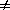
|
|||||||||||||||||||||||||||||||||||||||||||||||||||||||||||||||||||||||||||
FIG. 10. Problem structures to show that for i = j, the intersection of Sm,i and Sn,j is not necessarily empty. |
|||||||||||||||||||||||||||||||||||||||||||||||||||||||||||||||||||||||||||
|
We next consider the sets S1,j, S2,j, S3,j,. . . S18,j, the sets of problem representations which are mapped by Tj onto P1, P2, P3, . . . P18, respectively. We take the previously established order of difficulty on the procedural representations P1- P18 (see Table 3) as an imposed order on the set of preimages, S1,j, S2,j, S3,j,. . . S18,j; We define this imposed order to be the order of problem difficulty on this collection of problem representations. This leads to the following matrix of difficulty hierarchy on the set of 512 MVP problem structures. (L > denote greater in difficulty.) S1,1 > S2,1 > S3,1 . . . > S18,1 S1,2 > S2,2 > S3,2 . . . > S18,2 S1,3 > S2,3 > S3,3 . . . > S18,3 . . . . . . . . S1,8 > S2,8 > S3,8 . . . > S18,8 The above matrix suggests that the difficulty hierarchy of the 512 MVP problems depends on the kind and number of transformations available to the individual problem solver. Each row in the matrix represents the difficulty hierarchy with respect to one transformation, but, as we will see below, the matrix enables determination of the difficulty hierarchy with respect to any number transformations, We start with a particular situation. Consider, for example, the situation which a solver is not able to change the structure of the problem presentation at all (i.e., is able to use only T1). For this solver, the difficulty hierarchy is given in Row 1. The main assumption of the following discussion is that if this solver learns an additional transformation, then he or she can apply both transformations and then choose between the two procedural representations according to which is easier to solve, Based on this assumption, if the solver has acquired knowledge of an additional transformation, say T3 (per statements reciprocation), all problem structures in S1,1 which can be mapped by transformation T3 procedural representations which arc easier than P1, will be shifted to other respective levels of difficulty lower than P1. What will remain in S1,1 for the problem solver who has learned to apply T3 is exactly those problem structures which get mapped under both T1 and T3 into P1, These problem structures comprise the intersection of S1,1, and S1,3. Notice that S1,1 -- the set of most difficult problem structures for the solver who knows only T1- now includes fewer elements than it did before the solver learned to use T3. The same process applies for S2,1, S3,1 . . . S18,1. To see how these sets will be changed as a result of learning and being able to apply T3 we look at what happens to each set Sj,1, 1 j 18, under transformation T3. For each j, Sj,1, contains subsets which get mapped to procedural representations which under T3 are easier, more difficult or remain unchanged compared to their respective images under T1. To facilitate the analysis and to introduce appropriate notation, we consider the tree cases, one by one. See Figure 11.
|
|||||||||||||||||||||||||||||||||||||||||||||||||||||||||||||||||||||||||||
|
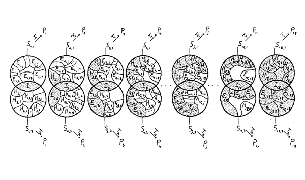 FIG. 11. Schemata to illustrate the change in problem difficulty due to application of problem structure transformations. The shaded region represents the problem difficulty hierarchy for a solver who acquires two transformations: T1 and T3.
|
|||||||||||||||||||||||||||||||||||||||||||||||||||||||||||||||||||||||||||
Using these definitions, the set S4,1, for example, will be changed into a new set composed of the union of three kinds of sets: I4 - consists of elements in S4,1 whose difficulty is not changed as a result of applying T3; E1,4, E2,4, E3,4, which are subsets, respectively, of S1,1, S2,1, S3,1, and are mapped to the easier procedural representation P4 under T3, than are S1,1, S1,2, S1,3, under T1; and H4,1, H4,2, H4,3, which are all subsets of S4,1 and are mapped to harder procedural representation sets under T3 than is S4,1 under T1. Finally, the set of problem structures S18,1 will be changed into a new set consisting of the union of I18; E1,18, E2,18, . . . E17,18; and H18,1, H18,2, . . . H18,17. Notice that (a) each Ej,18, 1 j 17 is a subset of S3,18 and each H18,j, 1 j 17 , is a subset of S18,1 and (b) each element in S18,3 or in S18,1 is either in their intersection I18 or in Ej,18 or H18,j for some 1 j 17. Statements (a) and (b) imply that S18,1 will be changed into the union of S1,18 and S18,3. Thus, the increase in knowledge by an additional transformation may result in increasing the number of easiest problem structures (from S18,1 to the union of S18,1 and S18,3) and decreasing the number of the most difficult problem structures (from S1,1 to the intersection of S1,1 and S3,1). To allow for a comparison between the difficulty hierarchy for solvers with knowledge of different transformations, we need to describe the above process in general terms. This description can be translated into a computer program so the difficulty hierarchy as a function of knowledge of transformations can be found easily. We will describe the difficulty hierarchy as a function of two transformations Tn and Tm; if more transformations are involved, the process can be extended inductively. Let the preimage set of Pj, when Tn and Tm are known, be Sj,nm. We want to find Sj,nm for j = 1,2, . . . 18. These can be found through the following process:
SUMMARY AND CONCLUSIONS Summary The Second step in the analysis was to hypothesize an information-processing problem-solving model for MVP problems. This problem-solving model depends on the structure of the problem presentation, problem representation: which the solver forms, operators which the solver uses to create a path through the problem space for individual MVP problems, and instantiations of these problem operators which result in procedures, or strategies, to find the missing value. The model identifies three types of problem representations, each of which relates to one of the three problem-solving goals of understanding the problem statement, investigating and determining relationships among the problem components, and providing the structure to allow the solver to apply procedures for finding the missing value. Two problem operators are identified; later steps in the analysis concentrates on instantiations of these operators on the procedural representations. The next major step in the analysis was to identify transformations by which solvers change the structure of a problem presentation or representation. The analysis resulted in a set of eight transformations which form a group under ordinary composition of Order 8. Following this, we considered certain restrictions on the structural variable, These restrictions lead to the identification of 18 procedural representations. Instantiation of the problem operators on anyone of these procedural representations involves the cognitive processes of finding the relationship between the known quantities of the closed per statement, expressing this relationship in multiplication or division equation, finding a quantity to express this relationship from the equation (the RCQ operator), using this quantity to transfer this relationship to the known and unknown quantities of the open per statement in terms of a multiplication or division equation, and solving this equation to find the value of the unknown (the ROQ operator). Consideration of direction of the multiplication and division operation which can be used in valid MVP problem-solution strategies, led to the identification of four major categories of strategies, PMS, PDS, NMS, and NDS. Further consideration of the role of the value computed in the instantiation of the RCQ operator for the instantiation of the ROQ operator led to the identification of 15 subcategories of strategies unequally distributed among the four major categories. Each of the 18 procedural representations we have identified were given a preference index ranging from 1-11, suggesting that some of the procedural representations are of equal preference to problem solvers. The final step in the analysis uses the eight problem-structure transformations and the 18 procedural representations to partition the set of 512 MVP problems into subsets, not necessarily of equal cardinality. For each transformation. the 512 MVP problems were partitioned into 18 disjoint subsets, which are the preimages or the respective procedural representations under that transformation. Finally, a hypothesized order or difficulty on the 18 procedural representations defined an order of difficulty on these preimage subsets such that the difficulty order on these subsets is isomorphic to the difficulty order of the procedural representations. As a result, a matrix of difficulty hierarchy of the 512 MVP problems was identified. This matrix enables us to characterize the difficulty hierarchy for a solver based on his or her knowledge of transformations. Conclusions According to our analysis, percentage problems are MVP problems which belong to the 1 x 1 measure space strategy. The meaning of the word percent, per one hundred, suggests that the referent quantity in any such per statement is one hundred. In some percentage problems the open per statement is the percentage question with the closed per statement being the data statement. In other, it is just the reverse, the open per statement is the missing data, while the closed per statement gives the percentage information. This identifies three types of percentage problems as follows.
A question arises in this context about the fact that percentage problems are known to be more difficult for children than other 1 x 1 proportion problems. The reason for this might be in the fact that the word percent, or the symbol %, inhibits the solver's flexibility in changing the problem presentation structure, even when salient variables, such as existence of an integer ratio, exist. More research is needed to investigate this question. The question of how the paritionability of the quantities involved in a problem affect the difficulty is one which needs investigation in the contexts of proportion and one-step division problems. This issue bears on the intuitive models which children develop for operations based on behavioral actions. The partitive concept of division seems to require that the quantity of the dividend be partitionable for any division result which is not an integral value. For example, a problem such as:
can be solved by actively distributing thc 15 apples, say one by one, to each , of the 3 children. On thc other hand, the slight change in the problem to get:
requires that the apples, or at least one of them, be cut into parts in order to make an equal distribution using up all the apples to get an answer of 3 _ apples. Yet this problem is solvable in active terms. A problem such as:
is even more difficult. The solution "2 4/5, children" defies a child's model partitive division in terms of a physical partitioning of the unit of one child. Research on how this affects children's conception of the problem as being a division problem, and as having the mathematical model of 14 ÷ 5 = x, and the difficulty of the problem needs investigation. Similar situations can be drawn from the domain of proportion problems. In situations which are modeled by a multiplication of the form a candies x dollars/candy = a x b, dollars involves a mapping from the measure space candies to the measure space of dollars. One frequently suggests to learners that the unit labels, candy and dollar, are treated like numbers and, in the multiplication above, the candies over candy "cancel," leaving dollars. Exactly what cognitive structures are which enable learners to make this mapping between measure spaces needs careful investigation. Canceling is a syntax operation, in a cognitive function. Two variables which have not been investigated in terms of their effect problem difficulty are direction of divisibility and existence of a common visor. Early indications in our recent research suggest that these variables affect problem difficulty. These findings need further research; perhaps looking at how numbers are stored in memory would be a point of departure. The issue of problem representation in the domain of proportion problems is an area in need of investigation. What relationship exists, for example, between the problem representations that high-performing solvers use as compared to low performers? What problem-structure transformations do high performers make use of as compared to low performers, is another research question (Harel, Behr. Post, & Lesh). The relative difficulty of changing the problem structure of a proportion problem according to rate reciprocation, per statement reciprocation, or measure space, needs investigation. The analysis presented here did not address the issue of the effect of problem context on problem difficulty. Some research in this direction has been reported (Heller et al., 1985). More is needed. What implications does the use of unit-rate operator have for MVP problem interpretation and solution? Vergnaud (1988) noted that the MVP problem structures (a) and (b) in Figure 12 involve quotitive and partitive interpretations, respectively. This suggests that using the unit-rate operator in some cases involves the conceptual notion of partitive division and sometimes the notion of quotitive division. For example, the first step in applying the unit-rate operator to:
results in:
This problem has a partitive division interpretation. The second phase of applying the unit-rate, operator results in;
which used a quotitive interpretation.
|
|||||||||||||||||||||||||||||||||||||||||||||||||||||||||||||||||||||||||||
FIG. 12. Quotitive versus partitive MVP problems |
|||||||||||||||||||||||||||||||||||||||||||||||||||||||||||||||||||||||||||
|
The hypotheses about preferences for instantiating the RCQ and the ROQ operators and for using one of several transformations to form a procedural representation invites an empirical study to confirm or dispute it. However, empirical studies suggest alternative preferences, the value of the analysis still will be maintained. These empirical results would change the internal ordering of some of the preferences, but would not change the overall structure of the analysis. REFERENCES: Behr, M.. Erlwanger, S., & Nichols, E. (1976). How children view equality sentences. (PM Tech. Rep. No. 3). Florida State University, Tallahassee, FL. (ERIC Document Reproduction Service No. ED 144802) Behr. M., Lesh, R., & Post, T. (1986). Representations and translations among representational mathematics learning and problem solving. In C. Janvier (Ed.), Problems of representation the teaching of mathematics. Hillsdale, NJ: Erlbaum. Behr, M., Reiss, M., Wheeler, R., Post, T., Lesh, R., & Smith, D. (1987). Part-whole, a equalized-wholes schemata for qualitative and quantitative proportional reasoning. Unpublished Manuscript, Northern Illinois University, DeKalb, IL. Bell, A., Fischbein, E., & Greer, B. (1984). Choice of operation in verbal arithmetic problems: the effect of number size, problem structure and content. Educational Studies in Mathematics. 15, 129-147. Bell. A.. Greer, A., & Grimison, L. (1987). Multiplicative structure: Numbers, operation, contents. Unpublished manuscript, Shell Center for Mathematical Education, University Nottingham, Nottingham, England. Chi, M.T.H, Feltovilch, P., & Glaser, R. (1981). Categorization and representations of physics problems by experts and novices. Cognitive Sciences. 5, 121-152. Chi, M.T.H., Glaser, R.., & Rees, E. (1982). Expertise in problem solving. In R. Sternberg (Ed). Advances in the psychology of human intelligence (Vol. I). Hillsdale, NJ: Erlbaum. Davis, Robert B. (1984). Learning mathematics: The cognitive science approach to mathematical education. Norwood, NJ: Ablex. Fischbein, E., Deri, M., Nello, M., & Marino, M. (1985). The role of implicit models in solving verbal problems in multiplication and division. Journal For Research in Mathematics Education, 16, 3-17. Freudenthal, H. (1983). Didactical phenomenology of mathematical structures. Boston: D. Reid Greeno, J.G. (1917). Process of understanding in problem solving. In N. J. Castellan, D.B. Pison G.R. Potts (Eds.), Cognitive theory (Vol. 2). Hillsdale, NJ: Erlbaum. Greeno, J.G. (1983). Conceptual entities. In D. Gentner & A. Stevens (Eds.), Mental models, (227-252). Hillsdale, NJ: Erlbaum. Greer, B. &. Mangan, G. (1984). Understanding multiplication and division. In T. Carpenter and Moser (Eds.), Proceedings of the Wisconsin meeting of the PME-NA (pp. 27-32). University of Wisconsin, Madison. Harel, G., Behr, M., Post, T., & Lesh, R. (1989). The blocks task and qualitative reasoning skill: 7th grade children in solving the task. Manuscript submitted for publication. Hart, Kath (1981). Children's understanding of mathematics, 11-16. Oxford: John Murray. Heller, P., Post, T.R., &. Behr, M.J. (1985). The effect of rate type, problem setting and rational number achievement on seventh grade student's performance on qualitative and numerical proportional reasoning problems. In S.K. Damarin (Ed.) Proceedings of the seventh annual meeting of the North American Chapter of the international group for ht Psychology of Mathematics Education, (pp. 113-122). Columbus, OH. Kaput, J.J. (1985) Multiplicative word problems and intensive quantities. An integrated software response. Cambridge, MA. Harvard Graduate School of Education, Educational Technology Center. Karplus, R., Pulos, S., & Stage, E.K. (1983a). Early adolescents proportional reasoning on "ratio" problems. Educational Studies in Mathematics, 14. 219-233. Kieran, C. (1981). Concepts associated with the equality symbol. Educational Studies in Mathematics, 12, 317-326. Larkin. J.H. (1981). Enriching formal knowledge: A model for learning to solve textbook physics problems. In J. Anderson (Ed.), Cognitive skills and their acquisition. Hillsdale. NJ: Erlbaum. Larkin. J.H. (1983). The role of problem representation in physics. In D. Gentner & A. Stevens (Eds.). Mental models, (pp. 75-97). Hillsdale. NJ: Erlhaum. Newell, A.. & Simon. H:A. (1972). Human problem solving. Englewood Cliffs, NI: Prentice-Hall. Noelling, G. (1980a). The development of proportional reasoning and the ratio concept: Part I. Differentiation of stages. Educational Studies in Mathematics. 11. 217-253. Noelting, G. (1980b). The development of proportional reasoning and the ratio concept: Part II. Differentiation of stages. Educational Studies in Mathematics. 11. 331-363. Riley. M.S., Greeno. J.G., & Heller, J.I. (1983). Development of children's problem-solving ability in arithmetic. In H.P. Ginsburg (Ed.), 771. The development of mathematical thinking. (pp. 153-196). New York: Academic. Rupley, W.H. (1981). The effects of numerical characteristics on difficulty of proportional problems. Unpublished doctoral dissertation, University of California at Berkeley. Schwartz, J. (1979). Semantic aspects of quantity. Unpublished manuscript. MIT. Cambridge, MA. Simon, H.A. (1979). Models of thought. New Haven. CT: Yale University Press. Simon, H.A.. & Hayes. J.R. (1979). Understanding written problem instruction. In H.A. Simon (Ed.), Models of thought. (pp. 451-477). New Haven. CT: Yale University Press. Toumiaire, F.. & Pulos. S. (1985). Proportional reasoning: A review of the literature. Educational Studies in Mathematics, 16, 181-204. Usiskin, Z. & Bell, M. (1983). Applying arithmetic: A handbook of applications of arithmetic. Part II, Operations. Chicago, IL: University of Chicago Press. Vergnaud. G. (1983). Multiplicative structures. In R. Lesh & M. Landau (Ed..), Acquisition of mathematics concepts and process. New York: Academic. Vergnaud, G. (1988). Multiplicative structures. In M. Behr & I. Hiebert (Ed..), The research agenda project: Middle school number concepts. Reston. V A: National Council of Teachers of Mathematics. FOOTNOTES: 1 The following summary of the roles of the indices used may be helpful to follow the discussion: In Sa,b, the right index indicates that the transformation which was applied is Tb, and the left index indicates that the postimage (under Tb) is Pb. In Ea,b, (Ha,b) the right index indicates that the postimage of Ea,b (Ha,b) under the new transformation learned is a subset of Pb, and the left index indicates to which Sa,x, Ea,b (Ha,b) belongs. * We are indebted to Gina Conner and Shari Larson who assisted in this research. This work was supported in part by the National Science Foundation under Grant No. DPE-8470077. Any opinions, findings, and conclusions expressed are those of the authors and do not necessarily reflect the views of the National Science Foundation. Correspondence and requests for reprints should be sent to Guershon Harel, Department of Mathematical Sciences, Northern Illinois University, DeKalb, IL 60115-2888. |